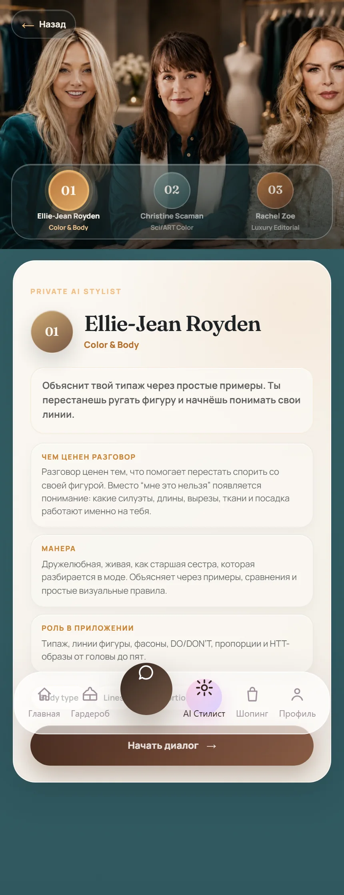
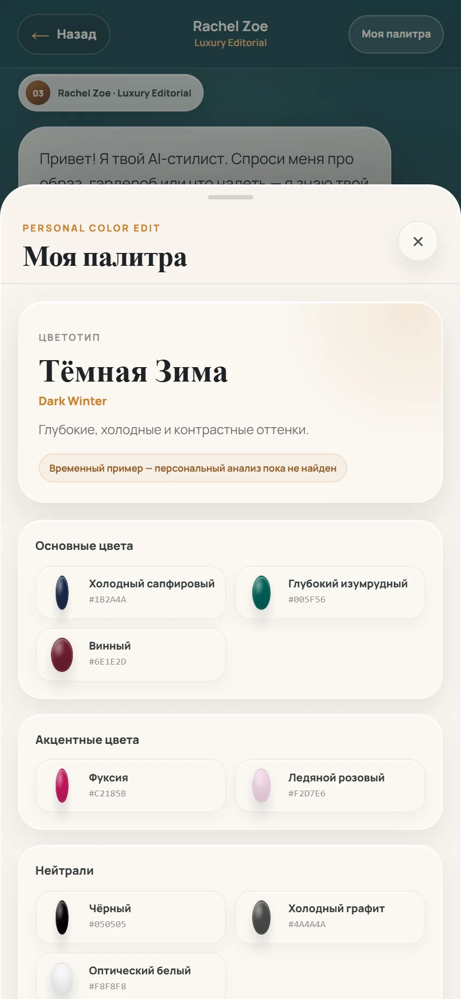
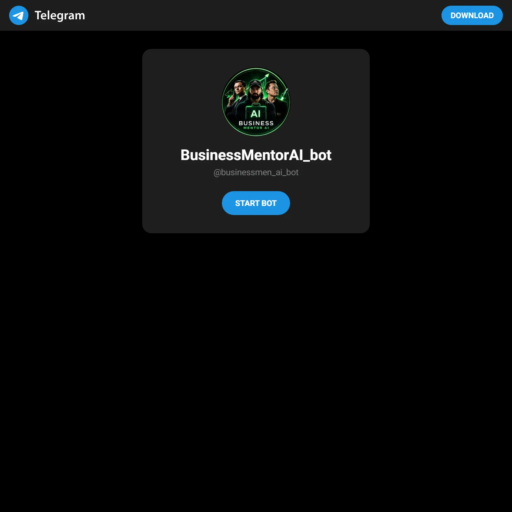
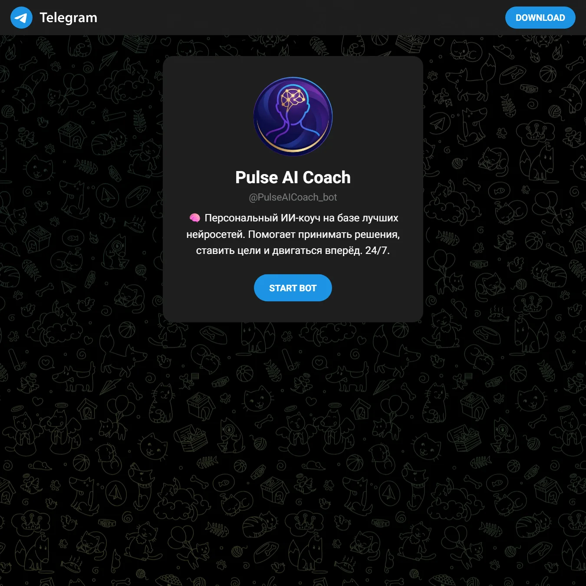

AI-продукты
Telegram Mini Apps, AI-боты, RAG-системы, automation.
DIMKOFF
SMM + AI Product Builder
Я создаю AI-системы и digital-продукты, которые помогают бизнесу получать клиентов, автоматизировать процессы и запускать онлайн-продукты под ключ.
SMM → Воронка → Telegram → AI → Продукт → Запуск
Telegram Mini Apps, AI-боты, RAG-системы, automation.
Позиционирование, контент, воронки, прогревы, лидогенерация.
CRM, аналитика, Telegram-сценарии, бизнес-автоматизация.
МЕТОД DIMKOFF
Я не просто делаю посты или код. Я соединяю стратегию, упаковку, продукт и запуск.
Ниша, аудитория, конкуренты, JTBD, tension, сообщение и приоритетная гипотеза.
Контентные территории, short-form, Telegram, прогрев, лид-магнит и события аналитики.
AI-бот, Mini App, сайт, backend, база, automation и deploy.
Тест, данные, улучшение UX, конверсия, удержание и новые функции.
MAIN CASE STUDIES
CaloriePT AI и Stylist AI остаются главными подробными кейсами.
Telegram-first продукт для мобильного сценария питания: AI-анализ, пользовательский путь, данные и controlled error states.
Пользователям сложно регулярно считать калории, понимать КБЖУ и удерживать дисциплину.
Ручной ввод быстро надоедает и не создаёт ощущения персонального сопровождения.
Telegram Mini App с распознаванием еды, дневником, итогом дня, рецептами и быстрыми действиями.
Контент или реклама ведут в Telegram: первое распознавание → дневник → повторное действие → рекомендации, холодильник и список покупок.
Telegram Bot API, Mini App / web UI, backend API, структурированная база продуктов, AI vision/text и production deploy.
Wellness-продукты, nutrition-сервисы, подписки и экспертные Telegram-воронки.


Premium consumer experience: витрина из трёх AI-стилистов, единый quick chat, персональная палитра, профиль и гардероб.
Пользователю сложно собирать образы, понимать стиль, цвета и собственный гардероб.
Fashion-приложения часто слишком простые и не дают ощущения личного стилиста.
Premium Mini App с гардеробом, AI-стилистом, рекомендациями и editorial aesthetics.
Контент о стиле ведёт в Telegram: профиль и гардероб → выбор стилиста → quick chat → рекомендация → сохранение или переход в каталог.
React, Vite, Telegram WebApp, state stores, server API, RAG/system prompts и lazy-loaded 3D/analysis modules.
Fashion experts, beauty, premium consumer services и персональные каталоги.
DIMKOFF AI BOT PORTFOLIO
Публичные карточки подтверждены. Функции и метрики не расширяются без отдельной проверки.
Нишевой Telegram AI-продукт с бережной коммуникацией и ответственными границами.
Открыть бота ↗
Публичное имя подтверждено карточкой. Businessmen AI остаётся рабочим названием кейса.
Открыть бота ↗
Пример Telegram AI-продукта, построенного вокруг регулярного пользовательского сценария.
Открыть бота ↗DIMKOFF DEMO LAB
Real products подтверждают delivery. Concept products показывают направление без заявления о готовом продукте.
AI DIRECTOR
Telegram-система, которая собирает деньги, задачи, продажи, риски и рекомендации в одну понятную бизнес-сводку. Не AI вместо директора, а AI-copilot для собственника.
Бесплатный AI-аудит бизнеса за 7 минут: где теряются деньги, что тормозит рост и что сделать в ближайшие 72 часа.
ДЛЯ КЛИЕНТОВ
Позиционирование, контент, прогревы и Telegram-воронка.
Консультации, заявки, ответы, база знаний и удержание.
Личный кабинет, сервис, продукт, подписка и аналитика.
Landing, bot, Mini App, CRM, AI, платежи и запуск.
Сводки, отчёты, заявки, задачи, аналитика и рутина.
ДЛЯ РАБОТОДАТЕЛЕЙ
Могу вести SMM, анализировать аудиторию, собирать контент и Telegram-воронки, автоматизировать рутину и быстро проверять продуктовые гипотезы через MVP.
Соединяю продукт, маркетинг и разработку через единый пользовательский сценарий, проверяемые артефакты и цикл данных.
NEXT SIGNAL
Brandbook v2, Client Deck и Employer Deck собраны как три маршрута одной системы.